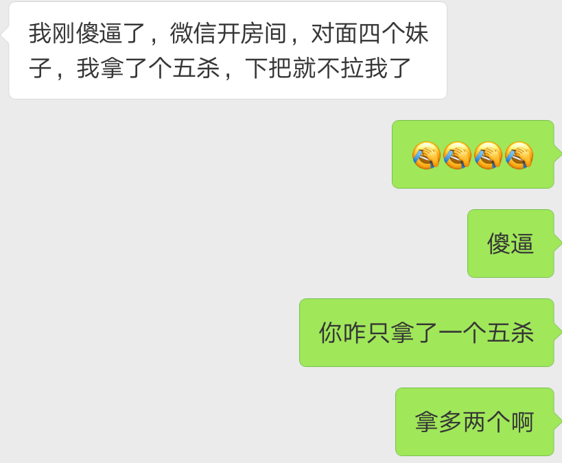
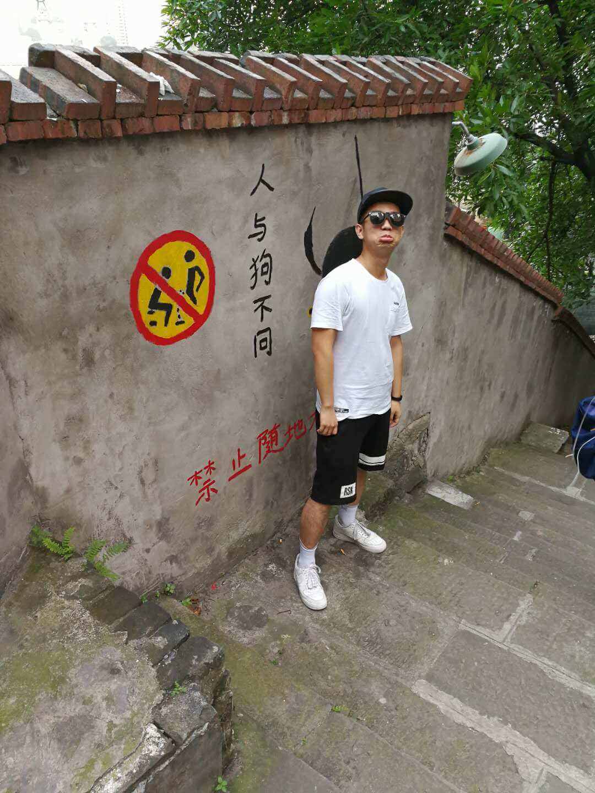

重庆，摄于 2017 年 06 月 07 日 22 时 41 分。半年过去了，而今仍能感受到那天的温度和汗水。
序言
今天是 2017 年的最后一天，于我而言，这一天似乎没什么不同，早上叫个拼车，照常上班。
当我想起去年今日，我曾给自己写过一些总结时，我还在静静的敲着业务代码，调试着百度地图。
搁置了近一年的博客，再次拉代码时，有些许感慨，当初心想记下点点滴滴，后来却发现，每天忙着累着，没有这番闲情逸致。
去年这个时候，我已经 “家里蹲” 了。那是我最放松，而又最情怀的时候 —— 决定好了未来的工作去处，没有任何精神负担，每天可以自由阅读学习自己喜欢的知识，写写颇有成就感的 Demo 和代码。自然而然地，年末来了个总结回顾，给自己一个回忆的理由。
我本想随便熬过这么一个夜晚，美滋滋的睡一觉，醒来便是新的一年。
但是，回想了走过的这一年，不记录一番就这么睡去，会不会显得太过 “佛系” 呢？
新的一年
不由自主的想起，大学时每年都说的一句话，如果我没记错的话，这句话应该是我鸡哥哥说的。
新的一年，我不再是过去那个傻逼了。
从明天起，我就是一个崭新的傻逼了！
此刻脑海回荡着我鸡魔性的笑声。
只是这种话，今年就没法听到了。
我的意思不是鸡哥没了，而是单纯缅怀一下我们的感情。
分道扬镳，有人工作了，有人读研了，有人出国了，有人又考研了。
2018，像这种话就不能多说了。
毕竟，以后都是成熟的傻逼了。
春风送暖入屠苏
2017 年的春节，张灯结彩的日子。
故事发生在东城的一家「七天」里。在佳源和烨堃的推（qiang）荐（po）下，我洗个澡的功夫，手机里就多了个叫「王者荣耀」的玩意儿。
从未玩过 MOBA 游戏的我，当时连平 A 都喘气，却不曾想，正是因为它，有了今年很多很多故事……
甘洒热血写青春
2017 年的夏天，临近毕业的时光。
这段日子里，最深有感触的就是，白天实习，晚上回寝，选择加入那群手机横过来的网瘾少年中。
那时候，我还只是个小张飞，一声怒吼震峡谷。
一边满怀激情的实习着，一边疯狂的横着手机，又一边担心着毕业设计和毕业论文。
那段时间里，实习要做的事不算少，毕业论文也不太有头绪。
随后的事实证明，边实习、边做毕业设计，还开黑，是不如「只开黑」好的。
当然，事实也同样证明。
毕设代码又有什么用呢？在这个设计当道的时代，没人关心你的实现究竟好与不好。
后来，毕业设计总算如愿通过。
实习工作也在五月末告一段落。
山水有逢，后会无期
2017 年的六七月，那时是真正的毕业季。
离别的日子不可逃避地越来越近。
我们似乎也想抓住最后这点时光。
一起去旅行，一起玩游戏，一起高歌，一起喝酒，留段回忆，来日可以提起。
有天晚上，凌晨 12 点，电商的大佬们还和妹子们在峡谷畅游，5V5 打得不可开交，水分十足。
我记得很清楚，那把 50 分钟的鏖战，所有的人头基本都被甩到了我头上，拿了男方 MVP。
那一局，我用的是坦克。
那一晚，我感慨万分，这可能也是我单身的原因吧。
当然，还是比不过我鸡读研后「Penta Kill」的传奇故事。

五月末，一行人去了秦皇岛，进行了一轮尬游。
六月初，我们五个人，进行了火辣辣的重庆之旅。
很多时候感受就是，意犹未尽。引用一下某电商妹子的话。
重要的不是一起去哪里玩，而是和谁一起玩。
我记不清我们的行程，就只记得，几个人很轻松自在，走到哪，汗就留到哪，笑声也在哪。
我还记得，那几天里，托尼老师手持顶级摄像器材「Sumsang Galaxy S7」，走遍整个重庆，只为寻找心中的摄影之美。
我的就不太好了，拍出来的效果也差强人意，「Huawei Mate 9 - LEICA DUAL CAMERA」。

回忆的车轱辘撵过了头，很多细节此时此刻也无法想起了。
六月底，大家陆陆续续搬离宿舍了。
我也搬家了，和澜澜一起成为了朝阳群众。
也是那天过后，我们才开始意识到，新生活与旧生活的交替与改变。
那天午后，我在群里听说，鸡哥哥，雷哥哥，听着「凤凰花开的路口」缓缓睡去。
就这样，我带着低落的情绪，开始了 2017 年的下半部分。
新生活新体验
2017 年的秋天，大家分道扬镳，开始适应自己的新生活。
7 月 4 日是我入职的日子，那天起，我正式成为了 58 集团的前端开发工程师。
开始漫漫的工作旅程，开始适应真正的职场生活。
期间，大学的小伙伴许多还留在北京，我们会互相拜访。后来大家步入正轨，都忙了，也就见得少了。
「古墓派」
在职期间，「信天翁」给了我们同届校招生互相认识的机会。
在这里，我认识了十几位非常有趣的组员。
那天分组名单出来后，我们以「甩锅」为主，「璐璐退群倾向综合征」为辅，最终如愿选出了我们的班长。
集训那几天，百来人激烈的竞争，丝毫不能动摇我组近乎为零的求胜欲。
夸张点说，可能就是只会吃喝拉撒了吧。
至于「古墓派」的来源，我想就不必在此赘述了。
即便过了十年，也可以想起那天的素质三连 “沙尘暴”，让我们永远倒在古墓里。
然而，实力强劲的我们，Hackthon 还是拿了个亚军。
不禁看了一眼此时安静躺在桌上的鼠标 —— 那个酷炫的战利品。
秋天给人的感觉是萧瑟的，而我却遇见了一个她，有一段十分开心的回忆，只可惜没能继续走下去。
我也不知道，什么时候变得这么淡然，只觉得一切都讲究缘分。
这就是改变。
道阻且难
年末的日子极其规律，工作的强度比起过去要大。
渐渐地，我感觉自己活得太将就了。却也没去改变什么。
述职插曲也让我陷入了沉思，对自己有了新的思考。
思考意义，思考价值，思考取舍。
尾声
而那个贯穿 2017 的「王者荣耀」，也开始有了些微妙的变化。
这些月来，开始接触了直播，有了自己的小爱豆 —— 大锤
我总来听他说单口相声，听他说瓜娃子，胖头鱼。
S9 赛季上了人生第一个荣耀王者，那种体验很奇妙。
多年后想起 2017 年，S8 赛季的五排超跑车队，想起那些和猪哥、CC一起冲段的日子，也是一段很热血的经历。
因为它，我们的联系变得更简单纯粹，峡谷就是第二个幽会的地方。
今天没有在峡谷跨年，也没有和朋友出去倒数，就坐在家里静静的敲着字。
不得不说，这种感觉更让我安稳舒心。
上了 7 天班，我终于有时间静下心来想这些东西了。
写到这里的时候，时间来到了 11：58，没想到一下子写了快三个小时。
怎么说，2018 来了呢。